Trước khi triển khai API AI bằng Lambda + Bedrock, bạn cần thiết lập một số tài nguyên và quyền truy cập trong AWS.
Amazon Bedrock hiện hỗ trợ tại nhiều region khác nhau.
Trong workshop này, bạn có thể sử dụng:
Chỉ cần đảm bảo mô hình AI bạn định dùng (Claude, Llama, Mistral…) có mặt tại region đó.
Lambda cần một IAM Role để có quyền gọi mô hình Bedrock và ghi log.
Trong phần này, bạn sẽ tạo policy trước, sau đó tạo role và gắn policy vào.
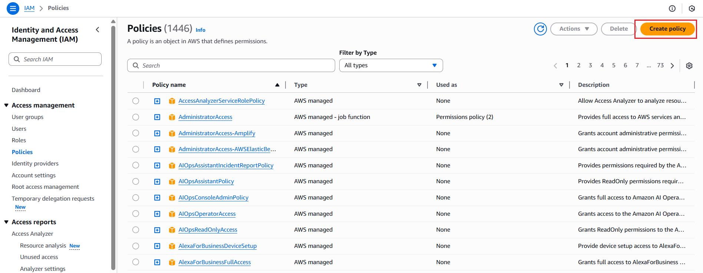
{
"Version": "2012-10-17",
"Statement": [
{
"Effect": "Allow",
"Action": [
"bedrock:InvokeModel",
"bedrock:InvokeModelWithResponseStream"
],
"Resource": "*"
},
{
"Effect": "Allow",
"Action": [
"logs:CreateLogGroup",
"logs:CreateLogStream",
"logs:PutLogEvents"
],
"Resource": "*"
}
]
}
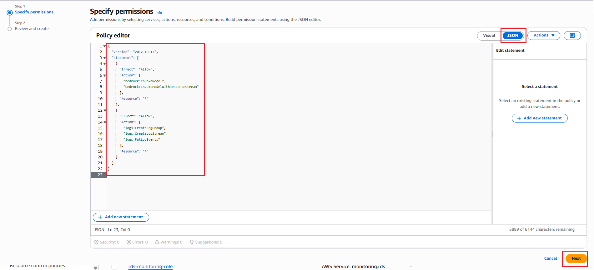
lambda-bedrock) và bấm Create policy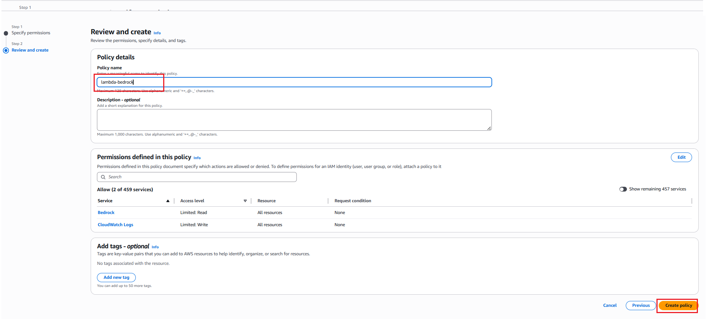
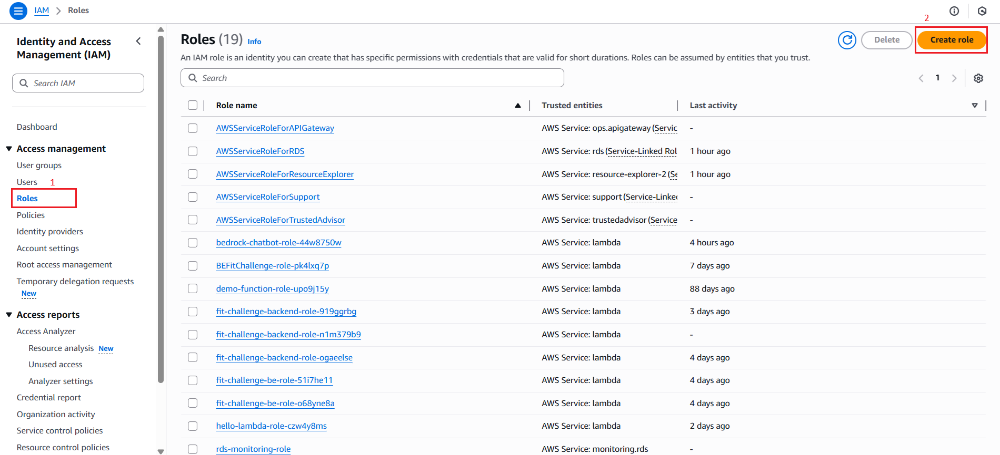
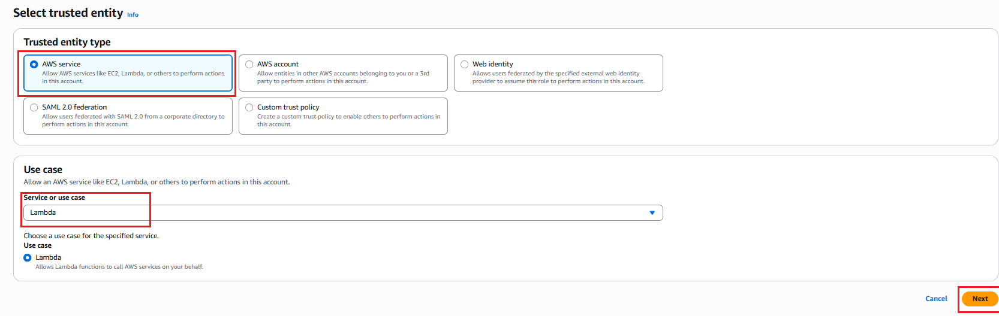
lambda-bedrock) và tick chọn nó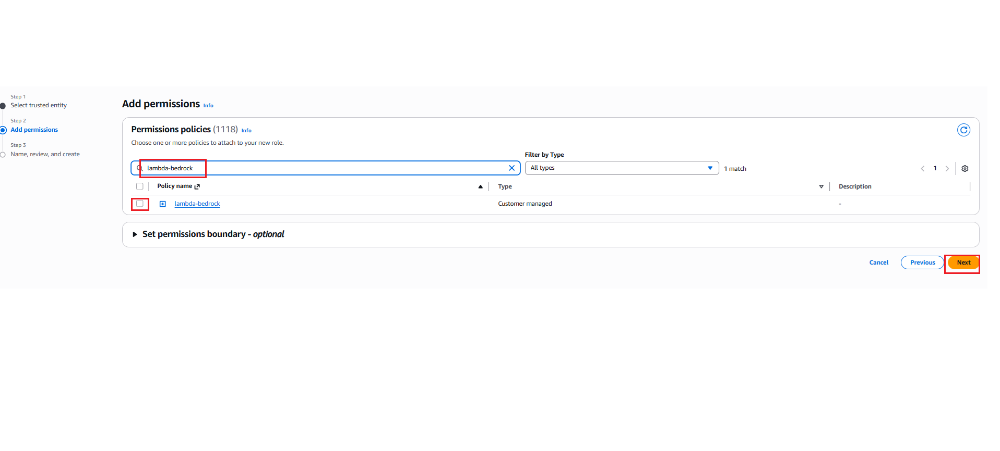
lambda-bedrock-role
Sau đó bấm Create role
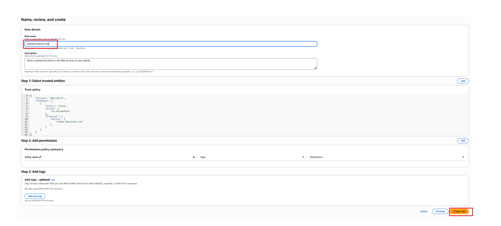
Vậy là bạn đã hoàn tất tạo IAM Role với quyền tối thiểu để Lambda có thể gọi Amazon Bedrock và ghi log CloudWatch.
Trước khi viết mã gọi Converse API, bạn sẽ kiểm thử nhanh mô hình trong AWS Console.
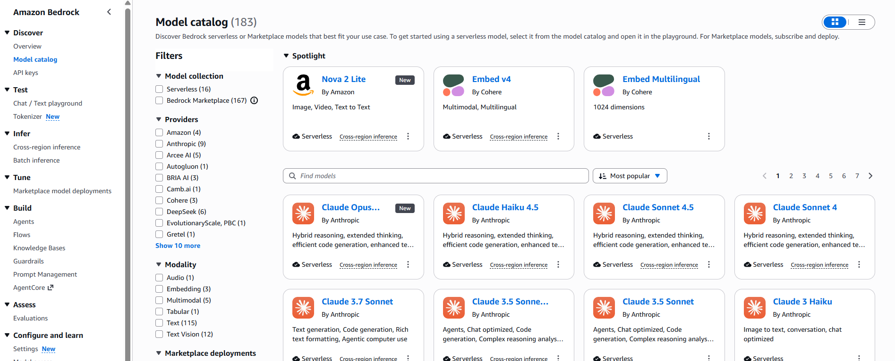
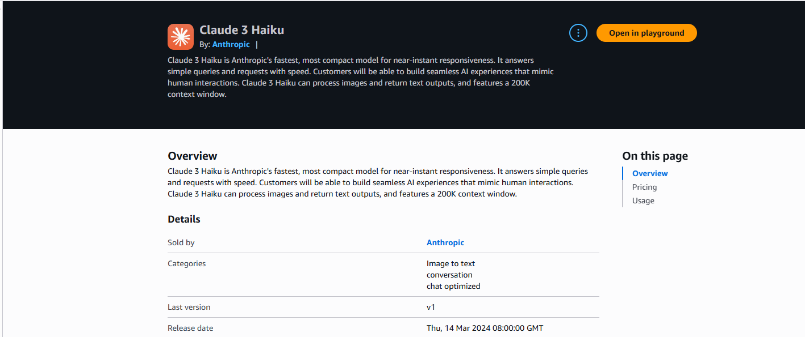
Nhập thử một câu hỏi để xác nhận rằng mô hình hoạt động bình thường trong region bạn đã chọn.
Nếu bạn muốn kiểm tra mô hình có hỗ trợ Converse API, làm theo bước sau:
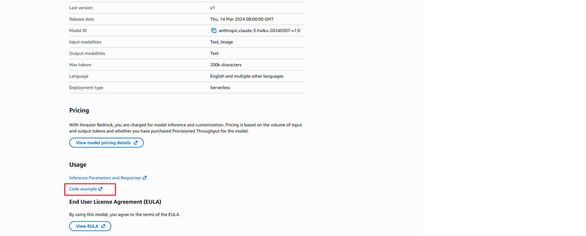
Nếu mô hình hỗ trợ Converse API, bạn sẽ thấy ví dụ có chứa lệnh:
bedrock.converse(...)
Như hình minh họa:
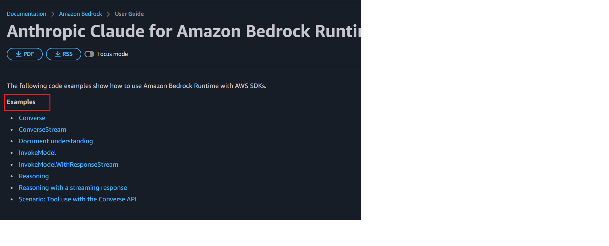
Như vậy là bạn đã kiểm tra xong khả năng hoạt động và hỗ trợ Converse API của mô hình trước khi bắt đầu tích hợp vào Lambda.
Workshop này vẫn phù hợp cho người mới, nên không yêu cầu kiến thức sâu.
Ở bước tiếp theo, bạn sẽ tạo Lambda Function và viết đoạn mã đầu tiên để gọi Converse API của Bedrock.